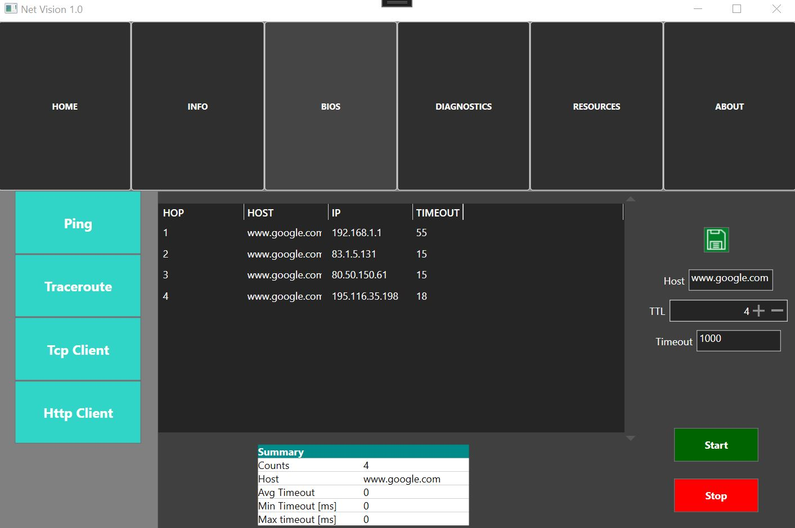
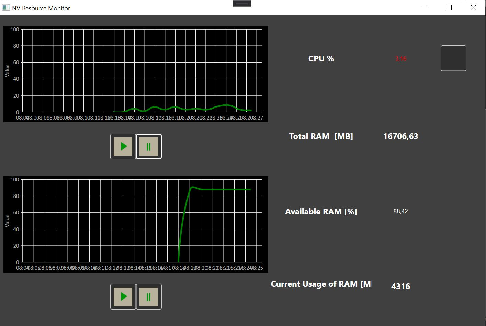
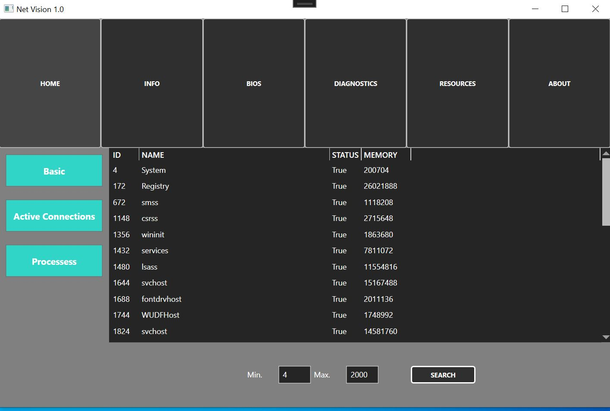
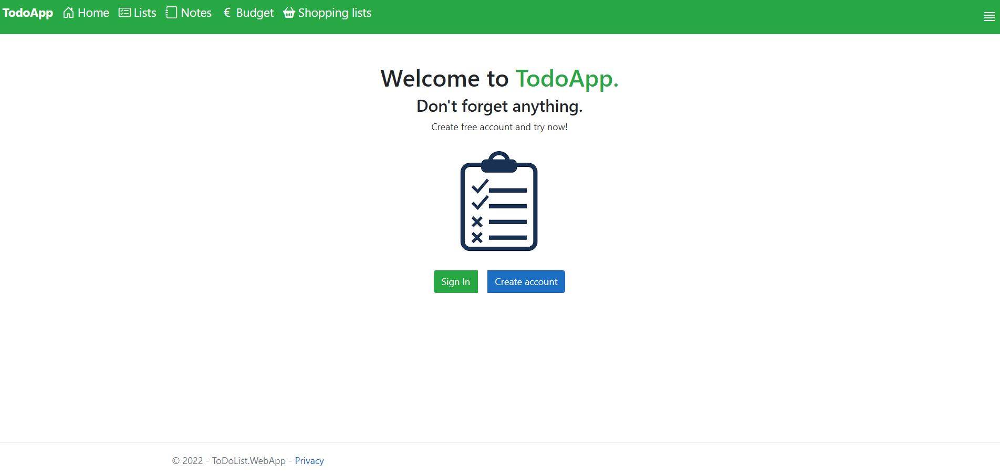
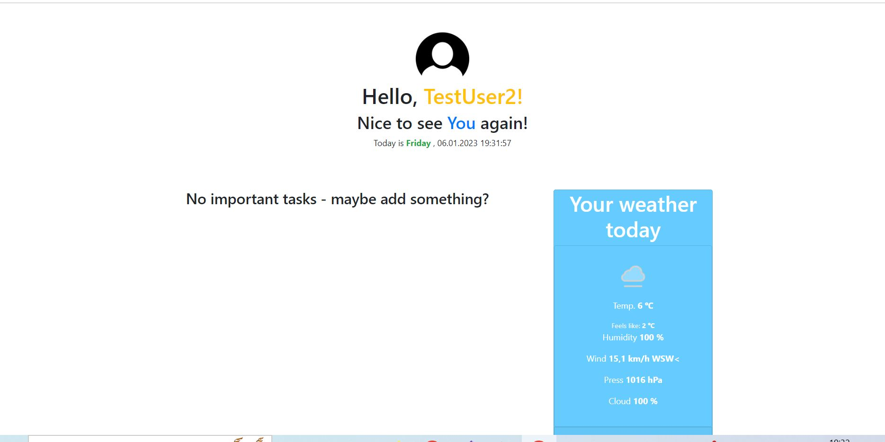
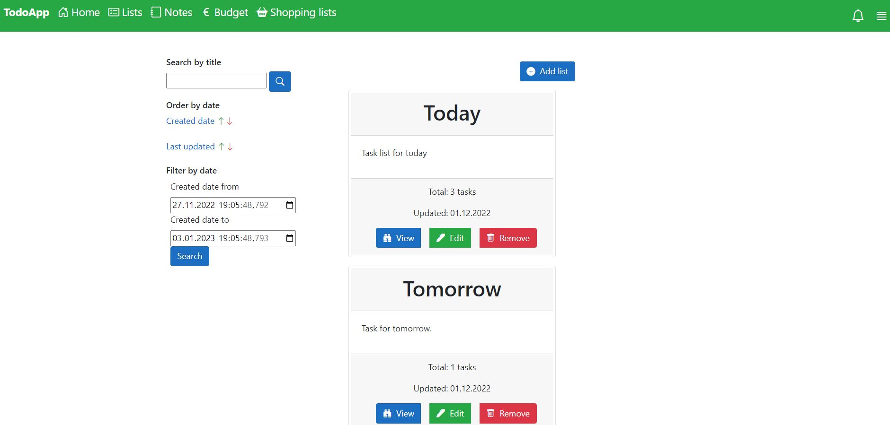
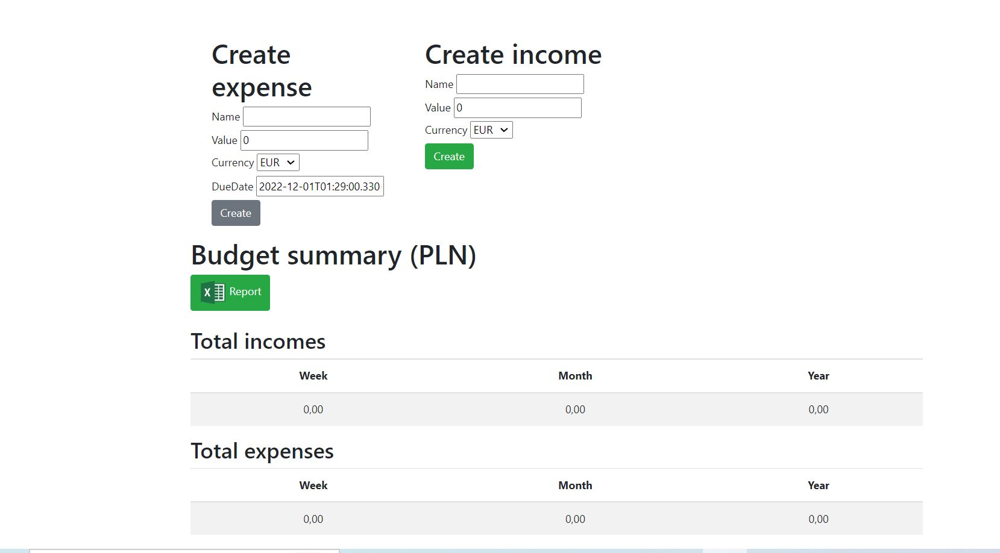

Net Vision
Aplikacja desktopowa przeznaczona do wykonywania prostych operacji sieciowych, takich jak ping, śledzenie pakietów IP (traceroute), pozyskiwanie informacji o interfejsach sieciowych, czy zajętych portach TCP i UDP. Ułatwia szybki dostęp do panelu sterowania, menedżera zadań, oczyszczania dysku, eksploratora plików itp. Aplikacja posiada także klienta TCP oraz HTTP. Ponadto aplikacja wykonuje pomiary zużycia CPU i pamięci RAM a także przedstawia je na wykresach w czasie rzeczywistym. Link: https://github.com/Tomasz789/NetVision-App


TodoApp
Aplikacja webowa przeznaczona do tworzenia list zadań. Umożliwia także tworzenie list zakupów, notatek, oraz zarządzanie budżetem (dla kilku walut). Użytkownik może wygenerować raport dochodów i wydatków w postaci arkusza kalkulacyjnego. Aplikacja pozwala na wygenerowanie wykresów i statystyk. Użytkownik może zalogowac się poprzez konto Google, a także wysłać e-mail do twórcy. Formularze są chronione przez reCaptcha. Link: https://github.com/Tomasz789/TodoApp-Deploying


